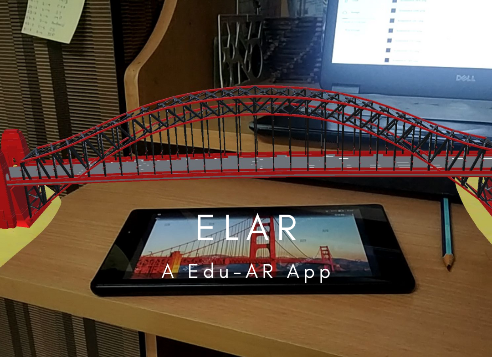
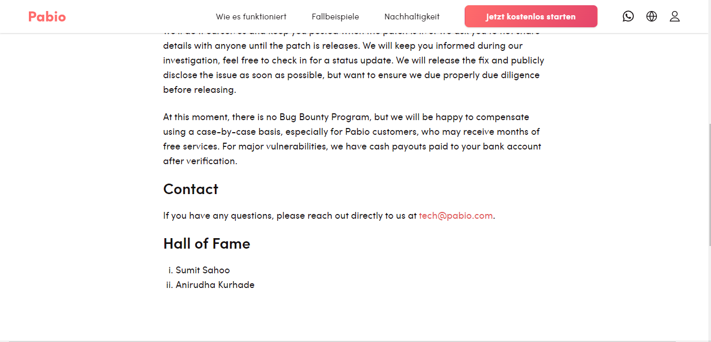
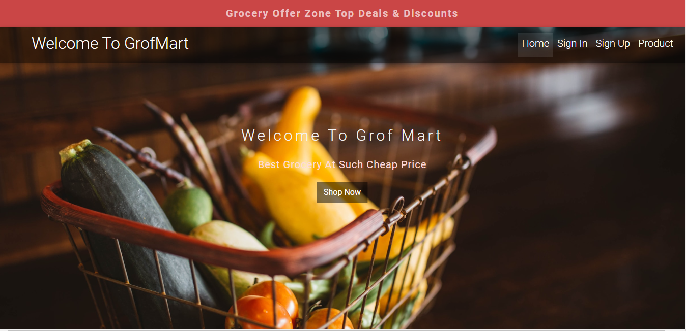
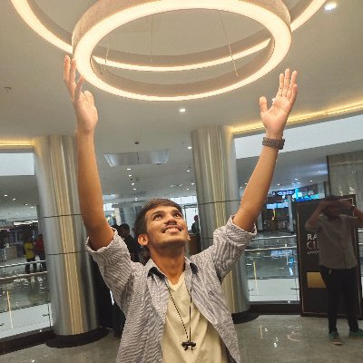

01PRODUCT / AUGMENTED REALITY
ELAR, an Edu-AR app
Making textbooks tangible through interactive 3D learning experiences.
Available for meaningful work / 2024—25
I’m Anirudha — a creative developer and security-minded builder turning complex ideas into clear, expressive experiences.
01 / selected work
A few projects where engineering, curiosity, and a human point of view meet.

01PRODUCT / AUGMENTED REALITY
Making textbooks tangible through interactive 3D learning experiences.

02SECURITY / RESEARCH
Security research recognised with a Pabio Hall of Fame and bounty.

03WEB / COMMERCE
A focused online grocery experience built from the ground up.
EXPERIMENT / ANDROID
A stock-market learning app designed to make first steps feel less intimidating.
View project ↗02 / the human behind the work

ANIRUDHA / 01I enjoy the space between a rough idea and the moment it becomes something people can use.
Currently pursuing Computer Engineering at VIIT Pune, I move between frontend craft, full-stack systems, mobile experiments, and security research. I’m happiest when the work is useful, well-made, and a little unexpected.
03 / capabilities
The stack changes. The way I think about problems doesn’t.
Websites, products, and full-stack systems with a strong frontend point of view.
Looking for the edge cases, hidden assumptions, and vulnerabilities others miss.
Creating communities and documentation that help ideas travel further.
04 / recognition
A few moments from the journey so far.
Security vulnerability disclosure with bounty recognition.
P3-level vulnerability reported to the security team.
Hands-on penetration testing and vulnerability assessment.
05 / say hello
Whether you’re building something new, fixing something tricky, or just want to compare notes — my inbox is open.
Start a conversation ↗